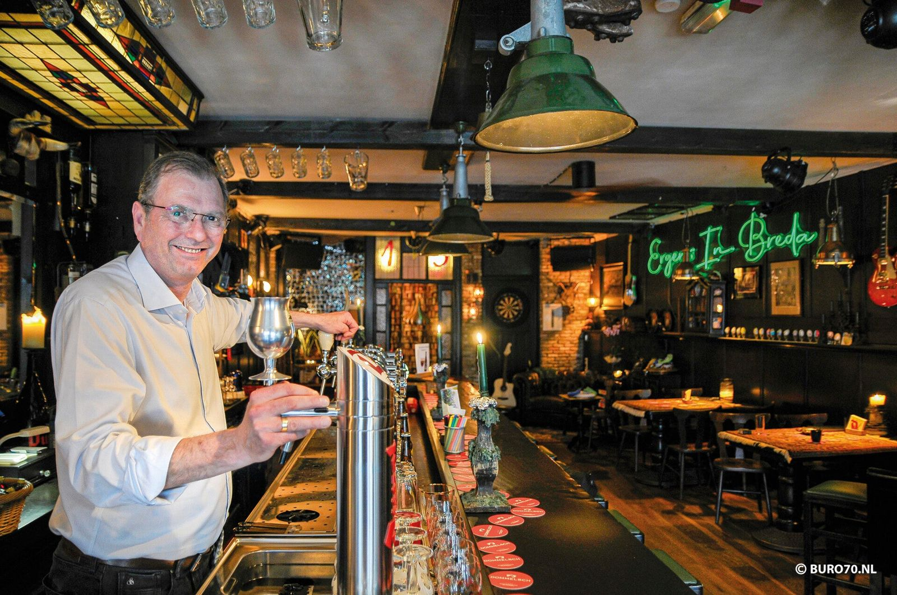
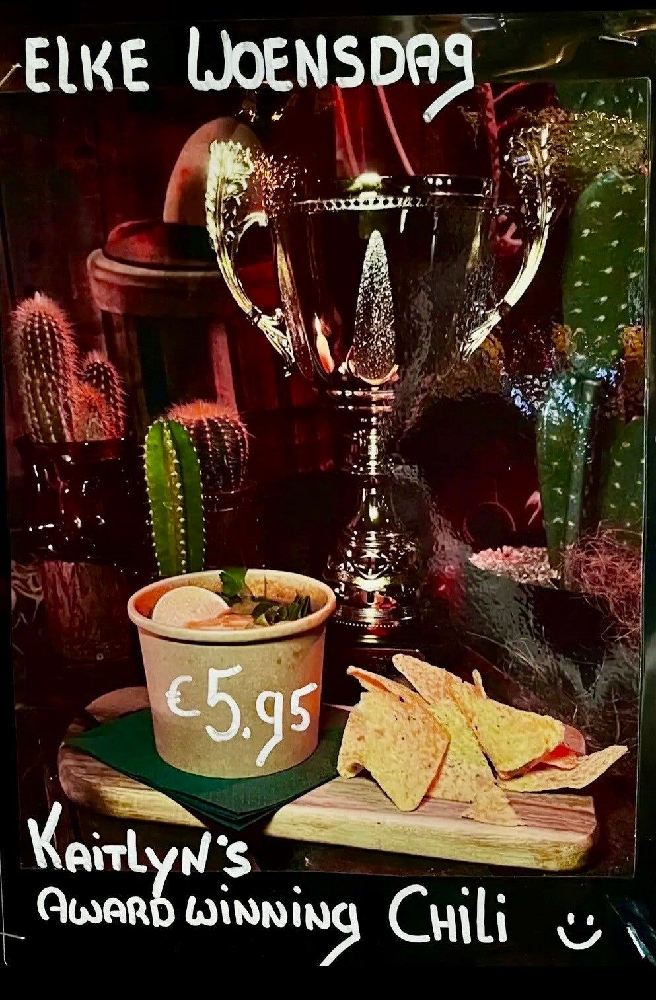
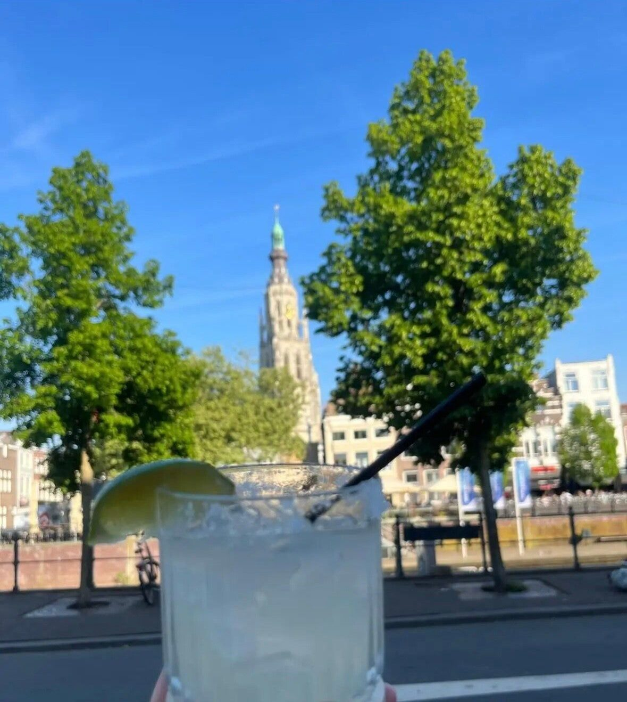
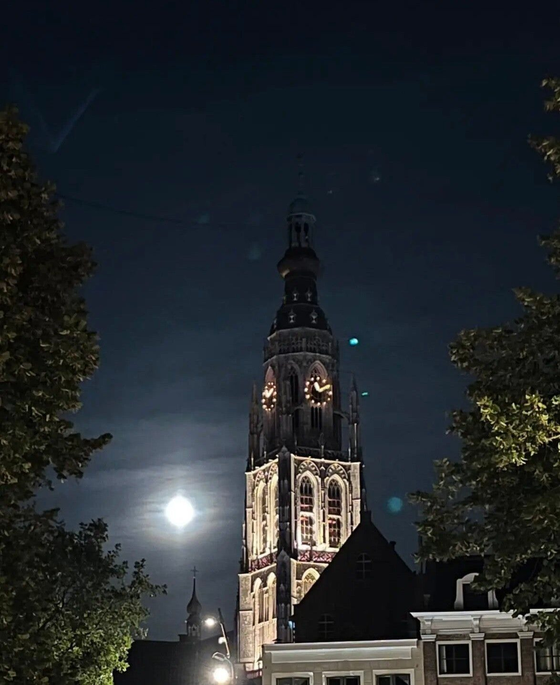
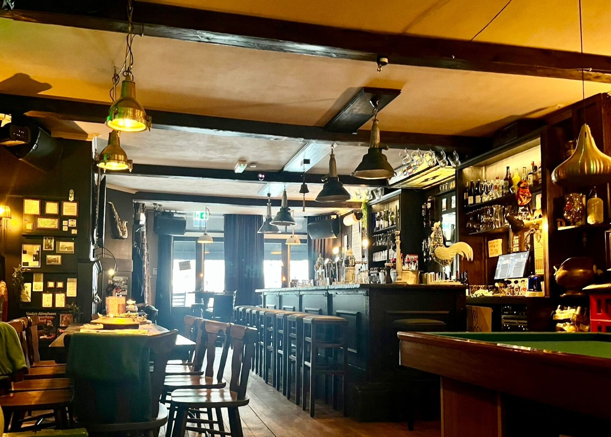
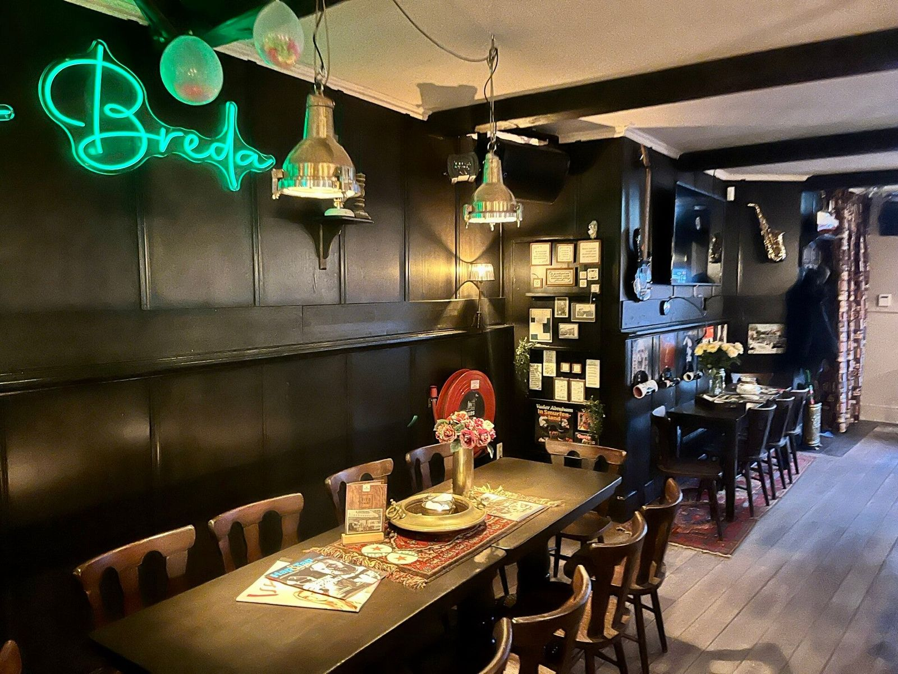
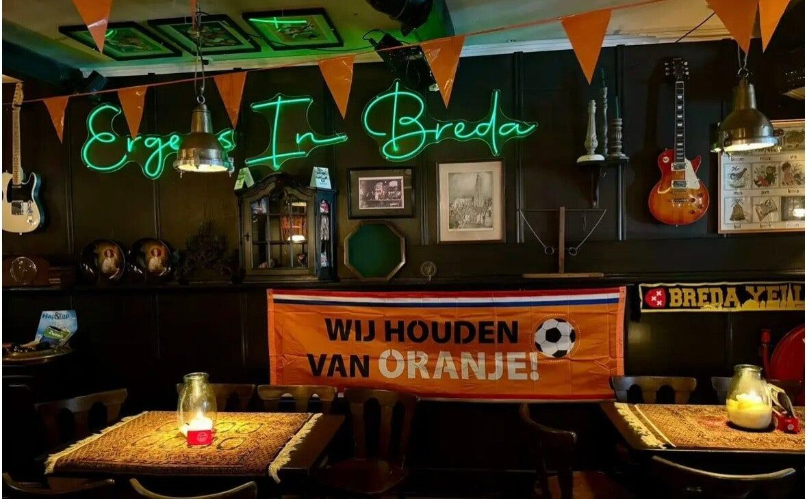
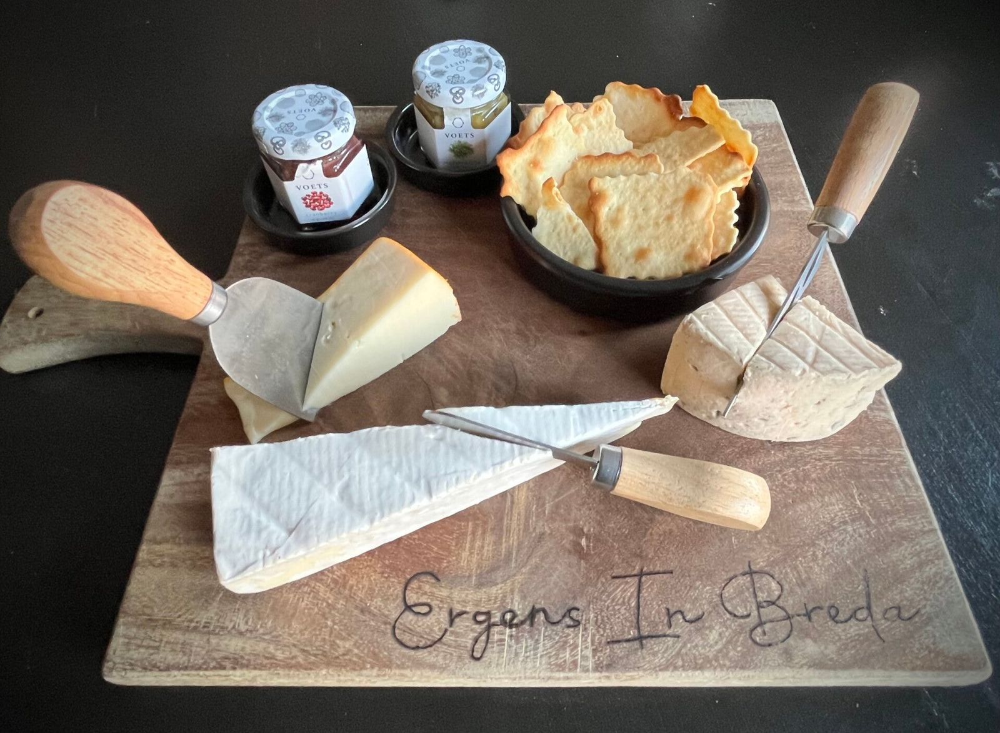
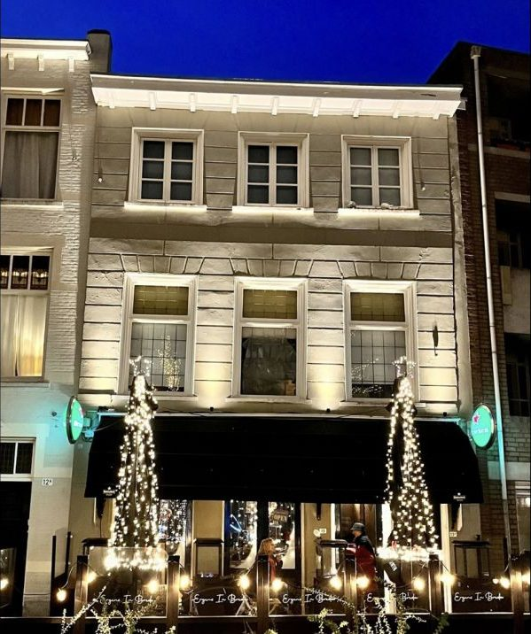

Een bruin café zoals vroeger
Aan de Prinsenkade, met uitzicht op de haven en de Grote Kerk. Elke dag iets anders: country op woensdag, jaren 60 en 70 op donderdag, vinyl op zondag en regelmatig live muziek.
Mijn vriend ontdekte dit laatst en nu zitten wij, en onze hele vriendengroep, er regelmatig.Gast, via indebuurt Breda
Elke dag iets anders
Open van woensdag tot en met zondag. Maandag en dinsdag zijn we dicht.
Country Night
Haal je cowboyhoed van de plank, dan krijg je een gratis shot. Met de Tex-Mex van Kaitlyn, onze head chef.
Jaren 60 & 70
Allerlei herinneringen komen boven bij de fijne muziek uit de jaren 60 en 70.
Clips uit 60, 70, 80 en 90
Luisteren én kijken: de tofste muziek van vroeger, alles met videoclip.
Terug naar de jaren 90
We draaien van alles uit die tijd. Zing, dans, vraag aan en geniet.
Vinyl Sunday
Van 17 tot 22 uur draaien we jullie uitgekozen muziek op vinyl, uit ruim 1300 singles. Zelf draaien? Vraag het de barman.
Live muziek, toegang gratis
Regelmatig staat er een band in het café, van rockabilly tot blues. Eerder speelden hier o.a. Louie & The Hurricanes, The Southern Blues Society en Boom Boom Beat. Daarnaast themadagen zoals onze Franse dag, en de Formule 1 live op het scherm. Vol is vol.

Woensdag Country Night
Poets je laarzen op en zorg dat je trek hebt. Op woensdag kookt Kaitlyn Tex-Mex, met als bekendste gerecht haar eigen chili con carne, waarmee ze meedoet aan de Dutch Chili Cook Off.
Tex-Mex hapjes
Van de tap en voor de trek
Dommelsch als huisbier en telkens speciaalbiertjes die je niet overal tegenkomt. Wie twijfelt, bestelt het proeverijtje van de tap.
Van de tap
Op de fles
Voor de trek
Ook wijn, port, whisky, mocktails en 0.0-bieren. Bekijk de hele drankenkaart
Het terras met het mooiste uitzicht van Breda
Vanaf ons terras aan de Prinsenkade heb je alle Bredase highlights in beeld. Als de zon schijnt is het buiten heerlijk zitten, met een biertje of een margarita.



Over Ergens In Breda
Ergens In Breda is van Marcel en Monique. Na jaren in de scheepvaart kocht Marcel het café aan de Prinsenkade 13, voorheen café de Brug, en maakten we er een echte bruine kroeg van: houten wanden, balken aan het plafond en een bel om een rondje voor de zaak te geven.
Een buurtcafé voor wijkbewoners, vaste gasten uit heel Breda en toeristen. Iedereen is welkom, jong en oud.
"Als gast mag je voor je geld iets verwachten. Ik vraag een prijs die past, meer heb ik niet nodig."Marcel
Een kijkje binnen




Kom langs of reserveer
Gewoon binnenlopen kan altijd. Kom je met een groep of bij een optreden, stuur dan even een WhatsApp.
Ergens In Breda
Bruin café aan de haven, op loopafstand van de Grote Kerk.
Openingstijden
Bij een Formule 1-race of evenement zijn we soms eerder open. Dat staat altijd op onze Facebook.